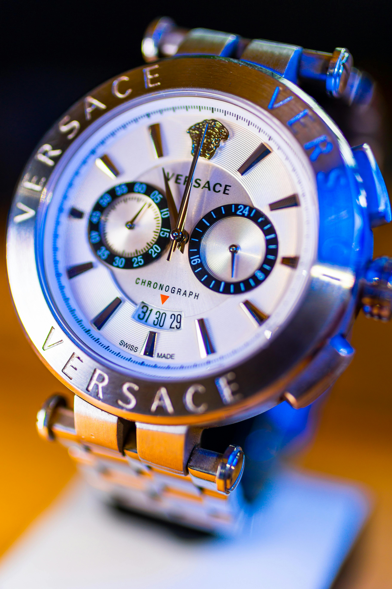
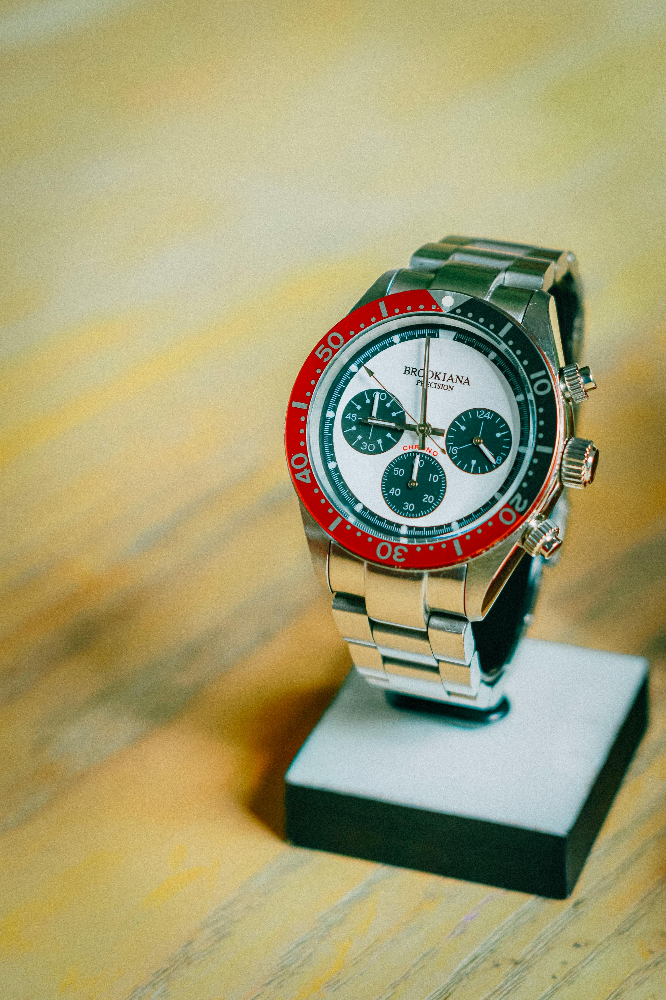
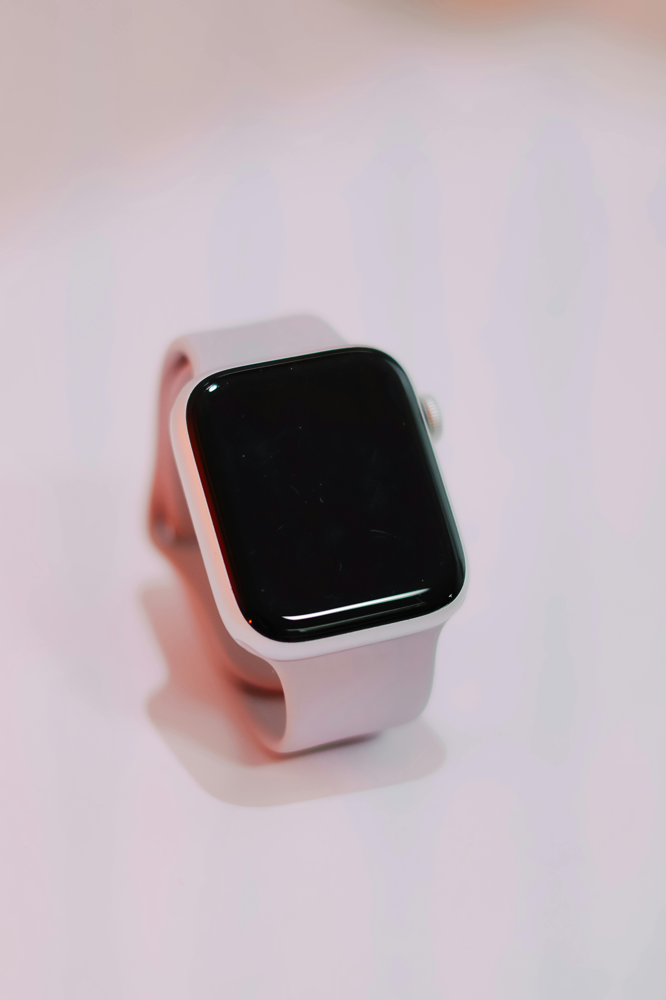

Modern Mastery of Antiquity
We blend contemporary precision diagnostics with time-honored techniques, offering the elite standard in clock restoration for the modern collector.
Explore Heritage
We blend contemporary precision diagnostics with time-honored techniques, offering the elite standard in clock restoration for the modern collector.
Explore Heritage
A curated selection of our most requested specializations.

Specialized fine mechanics servicing for 19th-century pocket timepieces.
Discover More
Re-polishing mahogany veneer and balancing complex carriage chime.
Discover More
Full-scale on-site diagnostics and repairs for heirloom corner clocks.
Discover MoreFrom an independent workbench to an internationally recognized atelier, our commitment to honoring horological history remains unyielding. We have dedicated decades strictly to the understanding of intricate mechanics, saving thousands of clocks from obscurity.
Experience the journey of a modern guild, dedicated exclusively to the rhythms of the past.
Opening our very first workbench in the quiet streets, repairing neighborhood heirlooms.
Partnering with master clockmakers across the globe to import the highest quality brass parts.
Integrating modern ultrasonic and laser alignments, significantly extending gear life.
Where artistry and absolute mathematical precision intersect.
We trace every friction point with digital telemetry to find issues before they escalate.
Re-applying shellac and bringing antique wood veneer back to a glowing luster.
Read about our recent iconic restorations.

Discover how we sourced century-old mahogany to perfectly patch a damaged base...
Read Story →Why using an acoustic timer creates a dramatically more accurate tempo for hairsprings...
Read Story →
Three essential rules to follow if you want your grandfather clock to keep accurate time...
Read Story →Meet the master watchmakers entrusted with reviving your irreplaceable heirlooms.
With over 40 years of experience, Arthur specializes in restoring 18th-century French mantle clocks and fusee mechanisms.
Eleanor is a classically trained woodsmith who brings antique mahogany, walnut, and oak clock cases back to life.
Julian’s unmatched precision guarantees perfectly tuned moon phases, perpetual calendars, and intricate quarter chimes.
Hear from those who trusted us with their most treasured pieces of time.
"The team miraculously revived my great-grandfather's pocket watch that hadn't ticked since 1950. Their communication and photo updates during the restoration process were deeply appreciated."
"I was terrified to hand over my French carriage clock, but Julian and Eleanor returned it looking and sounding exactly as it must have on the day it was built. True artisans of the highest order."